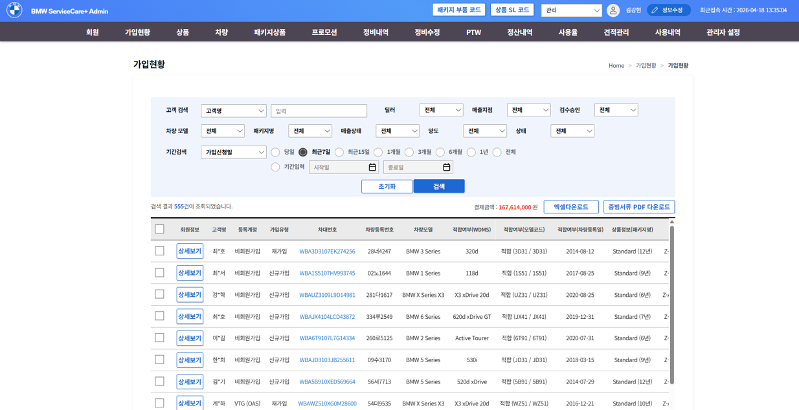

결제 연동 장애 원인 재현과 멱등 처리 설계
문제
- 중복 결제 문의가 반복되는데 매번 환불로 처리하고 있었고 원인을 아무도 특정하지 못한 상태
- CS가 늘어도 어느 구간에서 깨지는지 데이터가 없었음
접근
- 6개월 치 결제와 정산 에러 로그를 전수 분석해 근본 원인을 정산 에러로 특정
- 빈도와 영향도 기준 상위 3개 유형(구독 시작일 규정, 할인율 불일치, 중복 결제)으로 조치 범위 확정
- 결제완료 로딩 중 중복 클릭으로 PG 콜백이 중복 수신되는 상황을 재현 환경에서 동일하게 재현
실행
- 멱등키(UUID)를 Redis에 저장해 중복 요청을 차단하는 구조 설계
- 2달 치 약 30만 건 결제 트랜잭션을 전후 비교해 검증
- 이벤트 로그 테이블을 분리하고 유저 단위 집계 테이블을 신설해 추적 가능성 확보
- 딜러사와 본사, PG사, 개발, 인프라의 조치 순서를 조율해 순차 적용
중복 결제 약 3천 건에서 0건정산 오류 50% 감소관련 CS 50% 감소

TMAP에 옮긴다면 고객사에서 같은 증상이 반복 접수되는 API부터 봅니다. 재시도와 타임아웃이 겹치는 구간은 멱등 처리 여부를 먼저 확인하겠습니다.